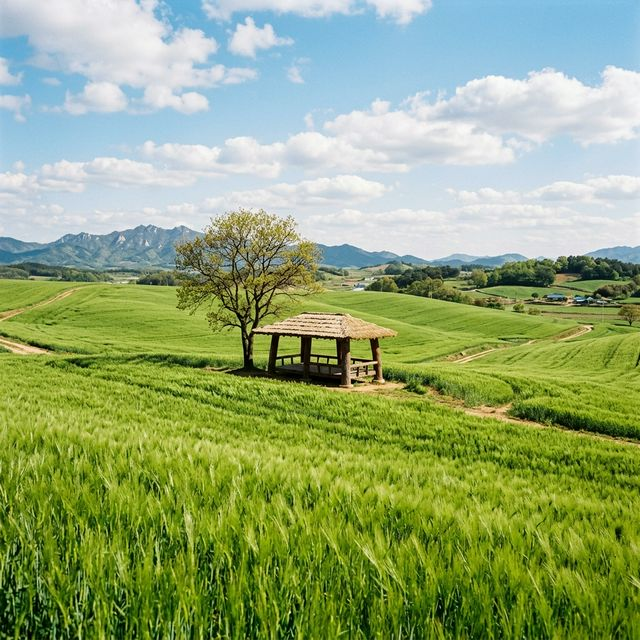
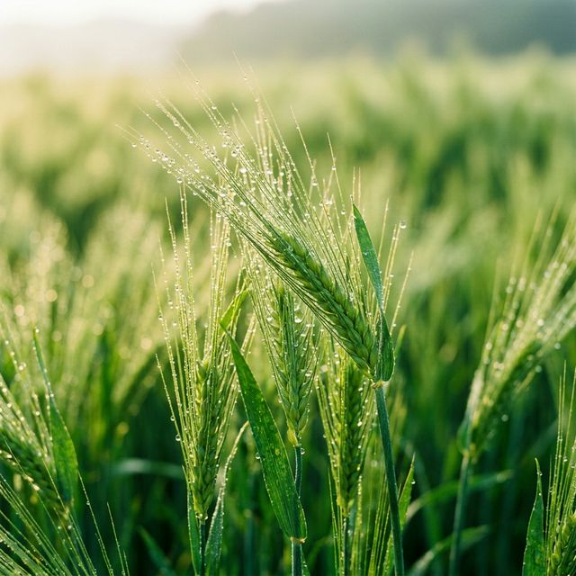
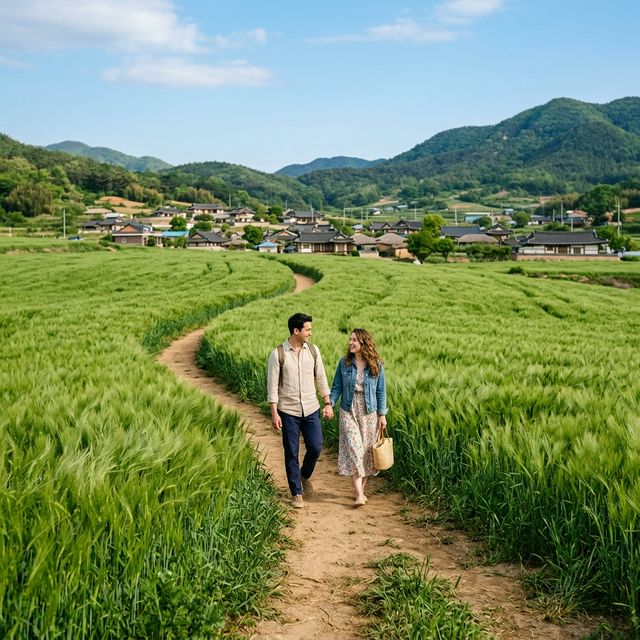

벚꽃이 눈처럼 흩날리며 지나간 자리에, 이제는 눈이 시리도록 푸른 초록의 물결이 찾아왔습니다. 전국 최대 규모의 보리밭을 자랑하는 전북 고창 학원농장의 풍경은 그 자체로 한 폭의 수채화 같은데요. 약 100만㎡(약 30만 평)에 달하는 광활한 대지에 펼쳐진 청보리의 향연은 매년 수많은 관광객의 마음을 설레게 합니다. 2026년 새롭게 단장한 고창 청보리밭 축제는 더욱 편리해진 교통 시설과 지역 경제를 살리는 착한 주차 시스템으로 여러분을 기다리고 있습니다. 오늘은 미리 알고 가면 200% 더 즐길 수 있는 고창 청보리밭 여행 전략을 소개해 드립니다.

올해로 제23회를 맞이하는 고창 청보리밭 축제는 2026년 4월 18일(토)부터 5월 10일(일)까지 진행됩니다. 개막식 당일에는 화려한 식전 공연과 함께 '보리밭 사잇길 걷기' 행사가 시작되는데요. 축제장 규모가 매우 크기 때문에 하루를 꼬박 잡아도 시간이 부족할 정도로 볼거리가 풍성합니다. 특히 학원농장은 단순히 보리만 키우는 곳이 아니라, 계절마다 메밀꽃, 백일홍 등 다양한 꽃들을 심어 사계절 내내 아름다운 경관을 유지하는 것으로 유명합니다. 이번 봄 시즌의 주인공인 청보리는 4월 말이면 어른 허리 높이까지 자라나, 바람이 불 때마다 일렁이는 '초록색 파도'의 진수를 보여줄 예정입니다.
축제 기간 중 예상되는 극심한 교통 혼잡을 방지하기 위해 고창군에서는 아주 특별한 제도를 도입했습니다. 바로 주차 요금 환급제인데요. 행사장에 입성하여 지정된 유료 주차장에 주말 및 공휴일 기준 1만 원의 주차료를 납부하면, 그 금액을 그대로 '고창사랑 상품권'으로 돌려줍니다. 이 상품권은 축제장 내의 먹거리 장터는 물론, 고창군 내의 식당, 카페, 편의점 등에서 현금처럼 자유롭게 사용할 수 있습니다. 사실상 주차비 부담 없애면서 지역 상권을 살리는 훌륭한 아이디어라 할 수 있습니다. 주차 공간 또한 800대 이상으로 대폭 확충되었으니 안심하고 방문하셔도 좋습니다.
청보리밭 여행에서 남는 건 역시 사진뿐이죠. 학원농장에는 드라마 촬영지로도 유명한 명소들이 곳곳에 숨어 있습니다. 가장 먼저 들러야 할 곳은 '나홀로 나무'입니다. 넓은 보리밭 한가운데 외로이 서 있는 나무 한 그루는 그 자체로 고즈넉한 분위기를 자아내어 커플이나 스냅 촬영객들에게 인기가 높습니다. 또한, 올해 새롭게 정비된 '황금손 조형물' 인근은 보리밭을 배경으로 한 입체적인 구도를 잡기에 최적입니다. 산책로 중간중간 배치된 원두막 위로 올라가 보리밭 전체를 내려다보는 하이앵글 샷도 잊지 마세요.
| 포토존 명칭 | 추천 촬영 컨셉 | 혼잡도 |
|---|---|---|
| 나홀로 나무 | 미니멀한 감성 스냅 | 높음 |
| 황금손 조형물 | 유니크한 광각 인물샷 | 보통 |
| 원두막 전망대 | 보리밭 파도 배경 파노라마 | 높음 |

청보리밭 축제의 정점은 역시 사잇길 산책입니다. 약 2km에 달하는 산책 코스가 여러 갈래로 나뉘어 있어 취향에 맞게 선택할 수 있는데요. 발뒤꿈치에 닿는 흙의 질감을 느끼며 천천히 걷다 보면, 복잡했던 머릿속이 맑아지는 것을 경험할 수 있습니다. 5월 초가 되면 보리뿐만 아니라 주변의 유채꽃과 어우러져 노랑과 초록의 환상적인 하모니를 감상할 수 있습니다. 길은 평탄한 편이지만 워낙 넓으므로 반드시 편한 운동화를 착용하시고, 중간중간 설치된 벤치에서 휴식을 취하며 봄바람을 만끽해 보시기 바랍니다.
금강산도 식후경, 고창에 왔다면 지역 특색이 듬뿍 담긴 미식을 빼놓을 수 없습니다. 축제장 입구의 먹거리 장터에서는 직접 수확한 보리로 만든 청보리 새싹 비빔밥을 맛볼 수 있는데요. 자극적이지 않고 건강한 맛이 일품입니다. 조금 더 근사한 한 끼를 원하신다면 선운사 인근으로 이동하여 풍천장어를 즐겨보세요. 살이 꽉 찬 장어 구이는 등산과 산책으로 지친 체력을 보충하기에 최상의 선택입니다. 후식으로는 고창의 특산물인 복분자 에이드 한 잔으로 상큼하게 마무리하는 코스를 강력 추천합니다.

고창은 유네스코 생물권 보전 지역답게 청보리밭 외에도 매력적인 장소가 많습니다. 차로 약 15분 거리인 고창읍성(모양성)은 답성 놀이로 유명한 곳으로, 성곽을 따라 걷는 길이 매우 아름답습니다. 또한, 람사르 습지로 지정된 운곡 람사르 습지는 자연 그대로의 생태계를 관찰하며 트래킹하기에 좋습니다. 시간 여유가 있다면 선운사의 신록을 구경하거나 상하농원을 방문하여 아이들과 함께 체험 활동을 즐기는 것도 알찬 당일치기 혹은 1박 2일 여행 코스가 될 것입니다.
분주한 일상 속에서 잠시 쉼표가 필요할 때, 고창 청보리밭의 평화로운 풍경은 그 어떤 약보다 뛰어난 치유를 선사합니다. 2026년 4월, 분홍색 꽃구경이 조금 식상해졌다면 이제는 마음까지 정화되는 초록의 세상을 만나보세요. 77만㎡의 드넓은 대지가 뿜어내는 싱그러운 에너지는 여러분의 봄날을 더욱 빛나게 해줄 것입니다. 오늘 전해드린 주차 환급 정보와 셔틀버스 시간표를 잘 참고하셔서, 잊지 못할 '그린 테라피' 여행을 떠나보시길 권합니다.